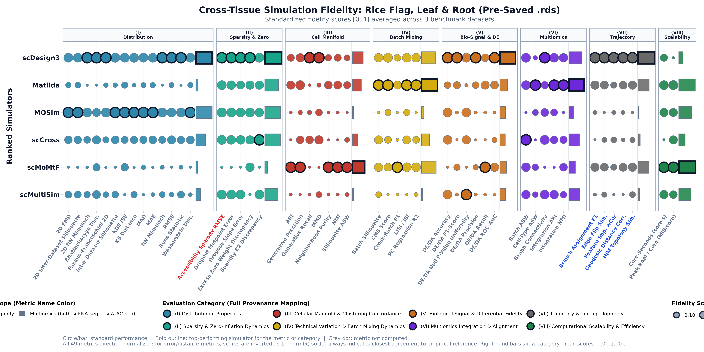
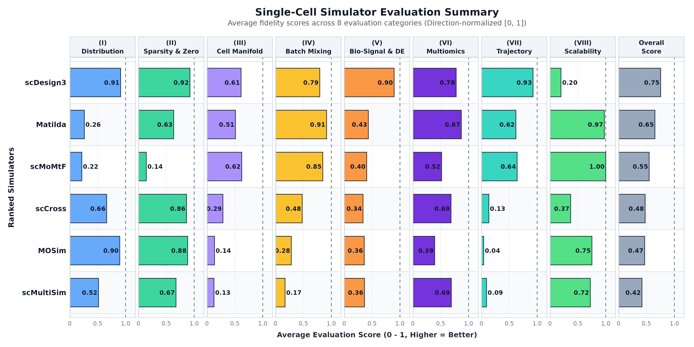
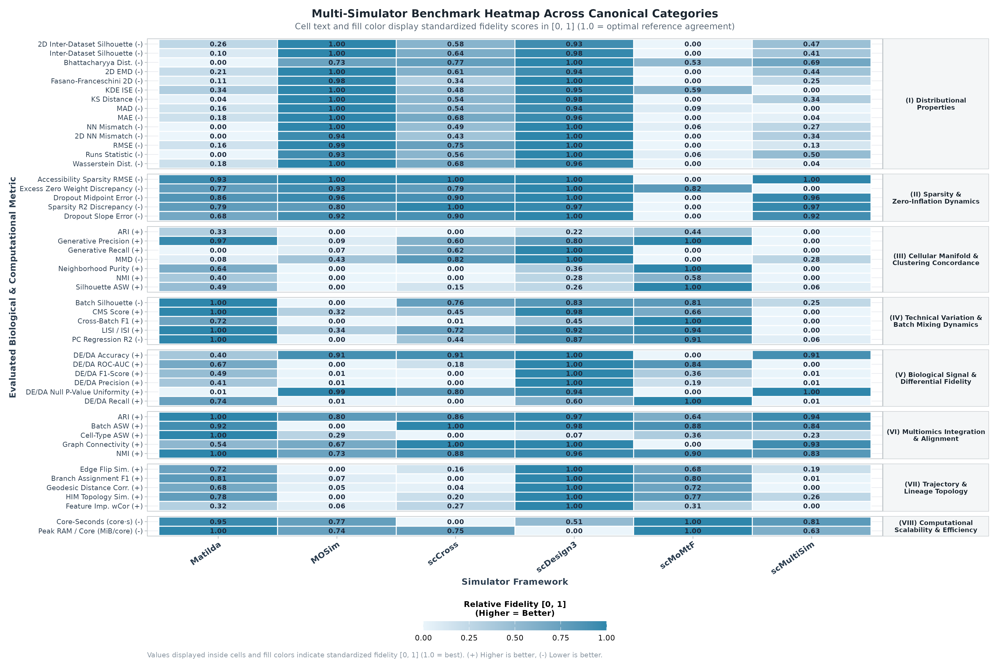
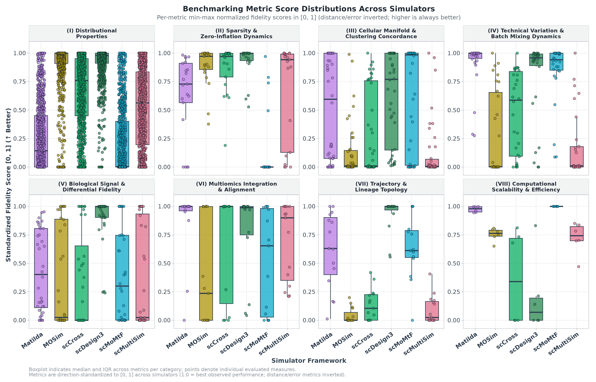
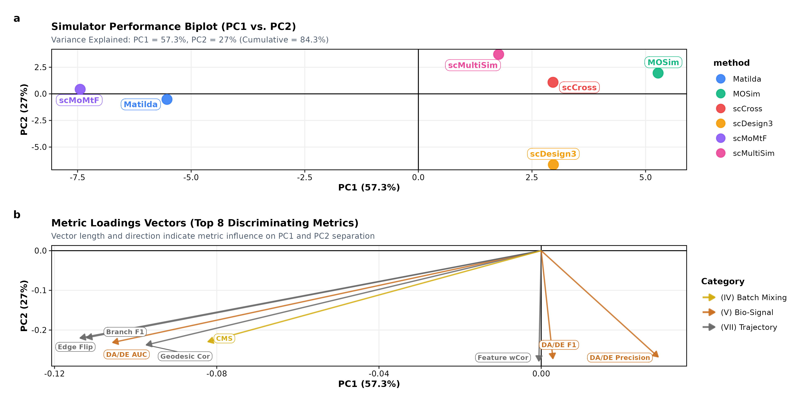
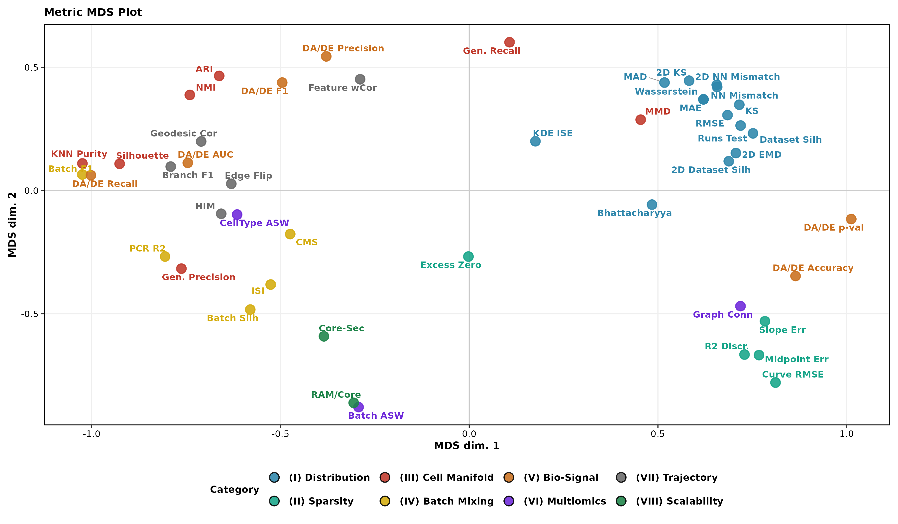
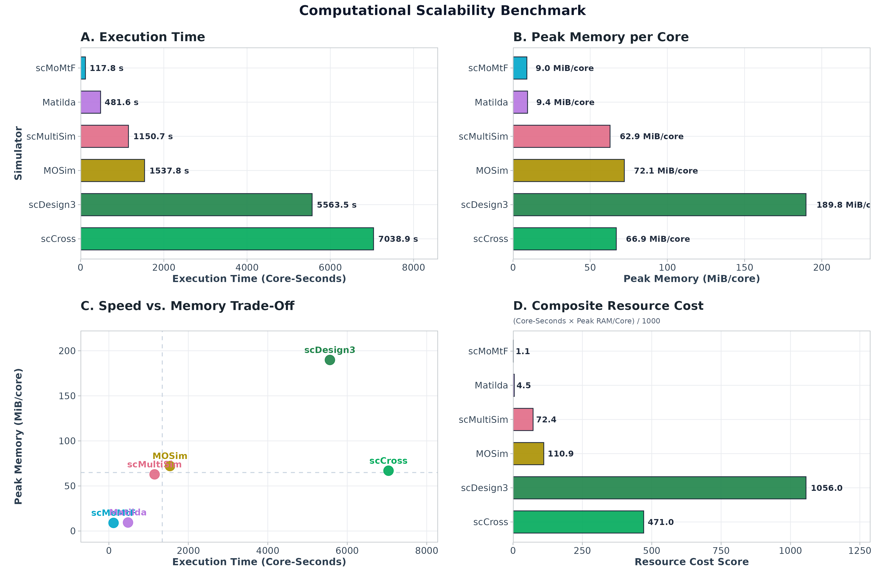

Demonstration 5: Analyzing Pre-Saved Benchmark Results (.rds)
Source:vignettes/demo-saved-rds.Rmd
demo-saved-rds.RmdIntroduction
In multi-tissue or multi-simulator benchmarking studies executed on
high-performance computing (HPC) clusters, computing the full 56-metric
evaluation suite across dozens of dataset-simulator pairs is
computationally intensive. Once evaluations are serialized to
.rds files via saveRDS(),
scSimEval enables instant reloading,
cross-dataset consolidation, custom leaderboard ranking, and
publication-grade visualization — without re-computing a single
metric.
This demonstration illustrates a complete downstream
.rds workflow using 3 independently saved Rice
paired multiomics benchmark sessions (Flag,
Leaf, and Root tissues), each containing all 6
simulators (scDesign3, MOSim,
scCross, scMultiSim, Matilda, and
scMoMtF) evaluated across all 8 canonical categories (2,142
metric evaluations per tissue; 6,426 total rows).
1. Loading & Merging Multiple Pre-Saved .rds
Sessions
Each saved session .rds archive contains the
standardized benchmark_df, dataset summaries, and metadata.
Using combine_benchmark_results(), multiple
.rds files computed on separate nodes or at different times
can be merged into a unified cross-tissue benchmark table in
seconds:
library(scSimEval)
# 1. Load three independently saved benchmark sessions (zero re-computation)
flag_sess <- readRDS("rice_Flag_vs_all_6_simulators.rds")
leaf_sess <- readRDS("rice_Leaf_vs_all_6_simulators.rds")
root_sess <- readRDS("rice_Root_vs_all_6_simulators.rds")
# 2. Extract their tidy benchmark tables
raw_dfs <- list(
Flag = flag_sess$benchmark_df,
Leaf = leaf_sess$benchmark_df,
Root = root_sess$benchmark_df
)
# 3. Consolidate into a single cross-tissue benchmark with re-normalized scores
combined_res <- combine_benchmark_results(
list_of_benchmarks = raw_dfs,
filter_gold_standard = TRUE,
recompute_normalized = TRUE
)
combined_df <- standardize_benchmark_categories(combined_res$granular_benchmark_table)
saveRDS(combined_df, "scSimEval_combined_benchmark_results.rds")Let’s inspect the consolidated cross-tissue object structure:
cat("Total consolidated metric rows:", nrow(combined_df), "\n")
#> Total consolidated metric rows: 6426
cat("Datasets merged:", paste(unique(combined_df$Dataset), collapse = ", "), "\n")
#> Datasets merged: Rice Flag (Paired), Rice Leaf (Paired), Rice Root (Paired)
cat("Simulators evaluated:", paste(unique(combined_df$Method), collapse = ", "), "\n\n")
#> Simulators evaluated: scMultiSim, scDesign3, MOSim, scCross, scMoMtF, Matilda
head(combined_df[, c("Dataset", "Method", "Category", "Metric", "Score_Raw", "Score")], 8)
#> Dataset Method
#> scMultiSim_Rice Flag (Paired).1 Rice Flag (Paired) scMultiSim
#> scMultiSim_Rice Flag (Paired).2 Rice Flag (Paired) scMultiSim
#> scMultiSim_Rice Flag (Paired).3 Rice Flag (Paired) scMultiSim
#> scMultiSim_Rice Flag (Paired).4 Rice Flag (Paired) scMultiSim
#> scMultiSim_Rice Flag (Paired).5 Rice Flag (Paired) scMultiSim
#> scMultiSim_Rice Flag (Paired).6 Rice Flag (Paired) scMultiSim
#> scMultiSim_Rice Flag (Paired).7 Rice Flag (Paired) scMultiSim
#> scMultiSim_Rice Flag (Paired).8 Rice Flag (Paired) scMultiSim
#> Category
#> scMultiSim_Rice Flag (Paired).1 (I) Distributional Properties
#> scMultiSim_Rice Flag (Paired).2 (I) Distributional Properties
#> scMultiSim_Rice Flag (Paired).3 (I) Distributional Properties
#> scMultiSim_Rice Flag (Paired).4 (I) Distributional Properties
#> scMultiSim_Rice Flag (Paired).5 (I) Distributional Properties
#> scMultiSim_Rice Flag (Paired).6 (I) Distributional Properties
#> scMultiSim_Rice Flag (Paired).7 (I) Distributional Properties
#> scMultiSim_Rice Flag (Paired).8 (I) Distributional Properties
#> Metric Score_Raw
#> scMultiSim_Rice Flag (Paired).1 Wasserstein 731.24604681
#> scMultiSim_Rice Flag (Paired).2 KS 0.89184061
#> scMultiSim_Rice Flag (Paired).3 MAD 727.00000000
#> scMultiSim_Rice Flag (Paired).4 Bhattacharyya 0.02651393
#> scMultiSim_Rice Flag (Paired).5 Runs_Statistic -46.28018284
#> scMultiSim_Rice Flag (Paired).6 NN_Mismatch 0.94333333
#> scMultiSim_Rice Flag (Paired).7 Between_Dataset_Silh_Global 0.57833873
#> scMultiSim_Rice Flag (Paired).8 MAE 731.24604681
#> Score
#> scMultiSim_Rice Flag (Paired).1 0.000000
#> scMultiSim_Rice Flag (Paired).2 0.000000
#> scMultiSim_Rice Flag (Paired).3 0.000000
#> scMultiSim_Rice Flag (Paired).4 0.451561
#> scMultiSim_Rice Flag (Paired).5 0.000000
#> scMultiSim_Rice Flag (Paired).6 0.000000
#> scMultiSim_Rice Flag (Paired).7 0.000000
#> scMultiSim_Rice Flag (Paired).8 0.0000002. Computing Cross-Tissue, Per-Tissue & Category Leaderboards
2.1 Overall Cross-Tissue Composite Leaderboard (Flag + Leaf + Root)
compute_method_leaderboard() aggregates direction-aware
normalized fidelity scores across all three tissues and all 8
categories:
overall_lb <- compute_method_leaderboard(combined_df)
print(overall_lb)
#> Overall_Rank Method Average_Fidelity Fidelity_Score
#> 4 1 scDesign3 89.1% 0.8908
#> 2 2 MOSim 81.1% 0.8113
#> 3 3 scCross 62.6% 0.6261
#> 6 4 scMultiSim 48.6% 0.4863
#> 1 5 Matilda 32.0% 0.3202
#> 5 6 scMoMtF 26.9% 0.26942.2 Per-Tissue Consistency Check
Evaluating each tissue individually confirms whether simulator rankings remain stable across distinct plant organs:
per_tissue_lbs <- lapply(unique(combined_df$Dataset), function(ds) {
lb <- compute_method_leaderboard(subset(combined_df, Dataset == ds))
lb$Dataset <- ds
lb[, c("Dataset", "Overall_Rank", "Method", "Average_Fidelity", "Fidelity_Score")]
})
do.call(rbind, per_tissue_lbs)
#> Dataset Overall_Rank Method Average_Fidelity Fidelity_Score
#> 4 Rice Flag (Paired) 1 scDesign3 89.4% 0.8941
#> 2 Rice Flag (Paired) 2 MOSim 82.4% 0.8238
#> 3 Rice Flag (Paired) 3 scCross 59.6% 0.5960
#> 6 Rice Flag (Paired) 4 scMultiSim 48.6% 0.4857
#> 5 Rice Flag (Paired) 5 scMoMtF 27.9% 0.2785
#> 1 Rice Flag (Paired) 6 Matilda 27.8% 0.2783
#> 41 Rice Leaf (Paired) 1 scDesign3 91.2% 0.9119
#> 21 Rice Leaf (Paired) 2 MOSim 76.3% 0.7634
#> 31 Rice Leaf (Paired) 3 scCross 58.4% 0.5835
#> 61 Rice Leaf (Paired) 4 scMultiSim 48.0% 0.4798
#> 11 Rice Leaf (Paired) 5 Matilda 31.4% 0.3142
#> 51 Rice Leaf (Paired) 6 scMoMtF 28.9% 0.2891
#> 42 Rice Root (Paired) 1 scDesign3 86.7% 0.8666
#> 22 Rice Root (Paired) 2 MOSim 84.7% 0.8466
#> 32 Rice Root (Paired) 3 scCross 69.9% 0.6987
#> 62 Rice Root (Paired) 4 scMultiSim 49.3% 0.4935
#> 12 Rice Root (Paired) 5 Matilda 36.8% 0.3683
#> 52 Rice Root (Paired) 6 scMoMtF 24.1% 0.24062.3 Category-Specific Leaderboards
Researchers can slice the pre-saved .rds table to rank
simulators within specific biological domains — for example,
Category I (Distributional Properties) and
Category VI (Multiomics Integration &
Alignment):
# Category I: Distributional Properties
cat1_lb <- compute_method_leaderboard(
subset(combined_df, Category == "(I) Distributional Properties")
)
print(cat1_lb)
#> Overall_Rank Method Average_Fidelity Fidelity_Score
#> 4 1 scDesign3 91.2% 0.9119
#> 2 2 MOSim 89.6% 0.8965
#> 3 3 scCross 66.2% 0.6615
#> 6 4 scMultiSim 51.6% 0.5155
#> 1 5 Matilda 26.2% 0.2616
#> 5 6 scMoMtF 21.6% 0.2164
# Category VI: Multiomics Integration & Alignment
cat6_lb <- compute_method_leaderboard(
subset(combined_df, Category == "(VI) Multiomics Integration & Alignment")
)
print(cat6_lb)
#> Overall_Rank Method Average_Fidelity Fidelity_Score
#> 1 1 Matilda 87.0% 0.8702
#> 4 2 scDesign3 77.8% 0.7781
#> 6 3 scMultiSim 69.1% 0.6914
#> 3 4 scCross 68.6% 0.6858
#> 5 5 scMoMtF 51.7% 0.5167
#> 2 6 MOSim 39.3% 0.39333. Publication-Grade Cross-Tissue Visualizations from
.rds
Every visualization function in scSimEval accepts the
consolidated .rds data frame directly, enabling rapid
regeneration of high-resolution manuscript figures.
3.1 Cross-Tissue Comparative Bubble Matrix
p_bubble <- plot_benchmark_bubble_matrix(
combined_df,
title = "Cross-Tissue Simulation Fidelity: Rice Flag, Leaf & Root (Pre-Saved .rds)",
base_size = 12
)
ggsave("figures/presaved_benchmark_bubble_matrix.png", plot = p_bubble, width = 18, height = 9, dpi = 300)
Figure 1: Cross-Tissue Comparative Bubble Matrix (Rice Flag,
Leaf & Root). Consolidates normalized fidelity scores
across all 8 evaluation categories and 6 simulators directly from three
pre-saved .rds session archives.
3.2 Evaluation Summary Polar Chart
p_summary <- plot_evaluation_summary(combined_df, normalize_scores = TRUE, base_size = 11)
ggsave("figures/presaved_evaluation_summary.png", plot = p_summary, width = 14, height = 7, dpi = 300)
Figure 2: Cross-Tissue Evaluation Summary Polar Chart. Displays aggregated category-level fidelity scores across Rice Flag, Leaf, and Root tissues.
3.3 Relative Metric Heatmap
p_heatmap <- plot_metric_heatmap(combined_df, scale_fill = "relative", base_size = 10)
ggsave("figures/presaved_metric_heatmap.png", plot = p_heatmap, width = 15, height = 10, dpi = 300)
Figure 3: Cross-Tissue Relative Metric Heatmap. Hierarchically clustered relative fidelity scores aggregated across Flag, Leaf, and Root paired multiomics benchmarks.
3.4 Multi-Panel Category Boxplots
p_boxplots <- plot_metric_boxplots(combined_df, score_type = "normalized", base_size = 11)
ggsave("figures/presaved_metric_boxplots.png", plot = p_boxplots, width = 14, height = 9, dpi = 300)
Figure 4: Cross-Tissue Metric Score Distributions Across Categories. Captures inter-tissue and inter-metric score variance across all 8 categories.
3.5 PCA Ordination Biplot & MDS Metric Space
p_pca <- plot_metric_pca(combined_df, panel = "both", top_n_loadings = 8, base_size = 11)
ggsave("figures/presaved_pca_ordination.png", plot = p_pca, width = 13, height = 6.5, dpi = 300)
p_mds <- plot_metric_mds(combined_df, ordination_by = "summaries", normalize_scores = TRUE, base_size = 11)
ggsave("figures/presaved_mds_metric_space.png", plot = p_mds, width = 12, height = 7, dpi = 300)
Figure 5: Cross-Tissue PCA Ordination Biplot. Projects simulator profiles and the top 8 metric loadings driving separation across Flag, Leaf, and Root.

Figure 6: Cross-Tissue Multidimensional Scaling (MDS) Metric Space. Visualizes global pairwise similarity among simulators across summary metrics.
3.6 Cross-Tissue Computational Scalability Benchmark
p_scalability <- plot_scalability_benchmark(
benchmark_data = combined_df,
type = "composite",
layout = "4panel",
modality = "total",
time_unit = "core_seconds",
memory_unit = "MiB/core",
base_size = 11
)
ggsave("figures/presaved_scalability_benchmark.png", plot = p_scalability, width = 13, height = 8.5, dpi = 300)
Figure 7: Cross-Tissue 4-Panel Scalability Benchmark. Aggregates core-seconds runtime, peak resident RAM per core (MiB/core), and speed-memory trade-offs across Flag, Leaf, and Root.
4. Instant Exploration in Shiny Studio
Interactive visual exploration of .rds benchmark bundles
is available via the companion
scSimEvalGUI package:
scSimEvalGUI::launch_scSimEval_app()Navigate to Data Hub
Upload Pre-Saved Benchmark Session (.rds) to interactively
filter tissues (Flag, Leaf,
Root), toggle metric categories, inspect leaderboards, and
export custom figures without re-running evaluations.
5. Cross-Tissue Takeaways
Consolidating the three pre-saved Rice .rds sessions
(6,426 metric evaluations) demonstrates strong rank stability across
distinct plant tissues: * scDesign3
consistently ranked #1 across all three tissues
(89.1% overall: Flag 89.4%, Leaf 91.2%, Root 86.7%). *
MOSim consistently ranked
#2 (81.1% overall: Flag 82.4%, Leaf
76.3%, Root 84.7%), closing the gap with scDesign3 most
closely in Root tissue. * scCross
(62.6%) and scMultiSim
(48.6%) held steady at ranks #3 and #4 across every
tissue, while Matilda
(32.0%) and scMoMtF
(26.9%) offered the fastest execution footprints.
6. Session Information
sessionInfo()
#> R version 4.6.2 (2026-10-29)
#> Platform: x86_64-pc-linux-gnu
#> Running under: Ubuntu 24.04.5 LTS
#>
#> Matrix products: default
#> BLAS: /usr/lib/x86_64-linux-gnu/blas/libblas.so.3.12.0
#> LAPACK: /usr/lib/x86_64-linux-gnu/lapack/liblapack.so.3.12.0 LAPACK version 3.12.0
#>
#> locale:
#> [1] LC_CTYPE=en_US.UTF-8 LC_NUMERIC=C
#> [3] LC_TIME=en_US.UTF-8 LC_COLLATE=en_US.UTF-8
#> [5] LC_MONETARY=en_US.UTF-8 LC_MESSAGES=en_US.UTF-8
#> [7] LC_PAPER=en_US.UTF-8 LC_NAME=C
#> [9] LC_ADDRESS=C LC_TELEPHONE=C
#> [11] LC_MEASUREMENT=en_US.UTF-8 LC_IDENTIFICATION=C
#>
#> time zone: Asia/Kolkata
#> tzcode source: system (glibc)
#>
#> attached base packages:
#> [1] stats graphics grDevices utils datasets methods base
#>
#> other attached packages:
#> [1] scSimEval_0.99.10
#>
#> loaded via a namespace (and not attached):
#> [1] pbapply_1.7-5 gridExtra_2.3.1
#> [3] rlang_1.3.0 magrittr_2.0.5
#> [5] RcppAnnoy_0.0.23 otel_0.3.0
#> [7] matrixStats_1.5.0 ggridges_0.5.7
#> [9] compiler_4.6.2 png_0.1-9
#> [11] systemfonts_1.3.3 vctrs_0.7.3
#> [13] reshape2_1.4.5 stringr_1.6.0
#> [15] pkgconfig_2.0.3 fastmap_1.2.0
#> [17] XVector_0.52.0 rmarkdown_2.32
#> [19] ragg_1.5.2 xfun_0.62
#> [21] cachem_1.1.0 jsonlite_2.0.0
#> [23] DelayedArray_0.38.2 BiocParallel_1.46.0
#> [25] irlba_2.4.1 parallel_4.6.2
#> [27] cluster_2.1.8.3 R6_2.6.1
#> [29] ica_1.0-3 bslib_0.12.0
#> [31] stringi_1.8.9 RColorBrewer_1.1-3
#> [33] parallelly_1.50.0 GenomicRanges_1.64.0
#> [35] jquerylib_0.1.4 scattermore_1.2
#> [37] Rcpp_1.1.2 Seqinfo_1.2.0
#> [39] SummarizedExperiment_1.42.0 knitr_1.52
#> [41] future.apply_1.21.0 IRanges_2.46.0
#> [43] sctransform_0.4.3 Matrix_1.7-6
#> [45] igraph_2.3.4 tidyselect_1.2.1
#> [47] abind_1.4-8 yaml_2.3.12
#> [49] codetools_0.2-20 listenv_1.1.0
#> [51] lattice_0.23-1 tibble_3.3.1
#> [53] plyr_1.8.9 Biobase_2.72.0
#> [55] S7_0.2.2 evaluate_1.0.5
#> [57] Rtsne_0.17 future_1.82.0
#> [59] fastDummies_1.7.6 desc_1.4.3
#> [61] pillar_1.11.1 MatrixGenerics_1.24.0
#> [63] Seurat_6.0.0 KernSmooth_2.23-27
#> [65] stats4_4.6.2 generics_0.1.4
#> [67] RcppHNSW_0.7.0 sp_2.2-4
#> [69] S4Vectors_0.50.3 ggplot2_4.0.4
#> [71] scales_1.4.0 globals_0.20.0
#> [73] glue_1.8.1 tools_4.6.2
#> [75] RSpectra_0.16-2 RANN_2.6.3
#> [77] fs_2.1.0 dotCall64_1.2
#> [79] cowplot_1.2.0 grid_4.6.2
#> [81] SingleCellExperiment_1.34.0 patchwork_1.3.2
#> [83] cli_3.6.6 textshaping_1.0.5
#> [85] spam_2.11-4 S4Arrays_1.12.1
#> [87] dplyr_1.2.1 uwot_0.2.5
#> [89] gtable_0.3.6 pls_2.9-0
#> [91] ggsci_5.2.0 sass_0.4.10
#> [93] digest_0.6.39 progressr_1.1.0
#> [95] BiocGenerics_0.58.1 SparseArray_1.12.3
#> [97] ggrepel_0.9.8 htmlwidgets_1.6.4
#> [99] SeuratObject_5.4.0 farver_2.1.2
#> [101] htmltools_0.5.9 pkgdown_2.2.1
#> [103] lifecycle_1.0.5 httr_1.4.9
#> [105] CDI_1.10.0 MASS_7.3-66